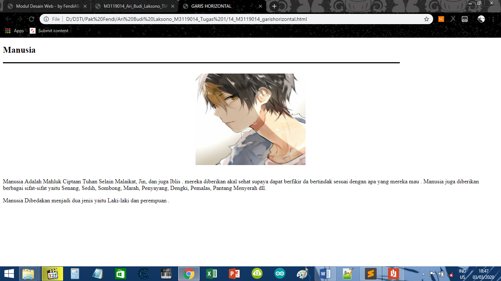

Membuat garis lurus
KODE PROGRAM
<!DOCTYPE html>
<html>
<head>
<meta charset-"UTF-8">
<title>GARIS HORIZONTAL</title>
</head>
<body>
<h2>Manusia</h2>
<hr color="black" size="3" width="80%" align="left" >
<center></center>
<p>
Manusia Adalah Mahluk Ciptaan Tuhan Selain Malaikat, Jin, dan juga Iblis . mereka diberikan akal sehat supaya dapat berfikir
da bertindak sesuai dengan apa yang mereka mau . Manusia juga diberikan berbagai sifat-sifat yaitu Senang, Sedih, Sombong,
Marah, Penyayang, Dengki, Pemalas, Pantang Menyerah dll.
</p>
<p>
Manusia Dibedakan menjadi dua jenis yaitu Laki-laki dan perempuan .
</p>
</body>
</html>
HASIL PROGRAM
Manusia
Manusia Adalah Mahluk Ciptaan Tuhan Selain Malaikat, Jin, dan juga Iblis . mereka diberikan akal sehat supaya dapat berfikir
da bertindak sesuai dengan apa yang mereka mau . Manusia juga diberikan berbagai sifat-sifat yaitu Senang, Sedih, Sombong,
Marah, Penyayang, Dengki, Pemalas, Pantang Menyerah dll.
Manusia Dibedakan menjadi dua jenis yaitu Laki-laki dan perempuan .
SCREENSHOT

KESIMPULAN
Dari koding di atas, Dapat disimpulkan bahwa cara membuat garis Horizontal dengan cara menuliskan
<hr >
Kembali Ke Halaman Utama